За боевые заслуги в годы Великой Отечественной войны десятки тысяч детей и пионеров были награждены орденами и медалями.
Звание Героя СССР
Герой Советского Союза — высшая степень отличия СССР. Почётное звание, которого удостаивали за совершение подвига или выдающихся заслуг во время боевых действий, а также, в виде исключения, и в мирное время.
Звание впервые установлено Постановлением ЦИК СССР от 16 апреля 1934 года, дополнительный знак отличия для Героя Советского Союза — медаль «Золотая Звезда» — учреждена Указом Президиума Верховного Совета СССР от 1 август 1939 года.
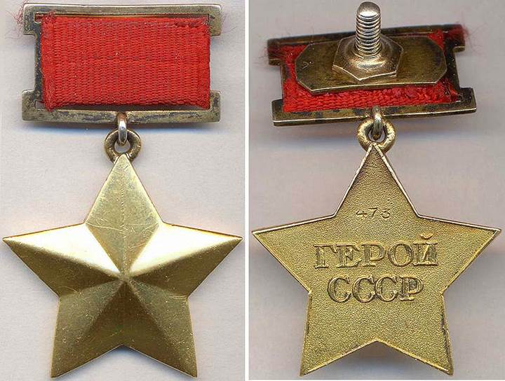Четверо пионеров-героев были удостоены звания Героя Советского Союза: Лёня Голиков, Марат Казей, Валя Котик, Зина Портнова.
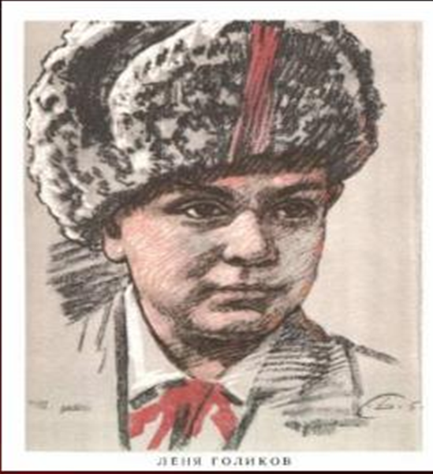 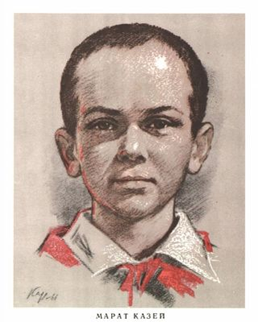 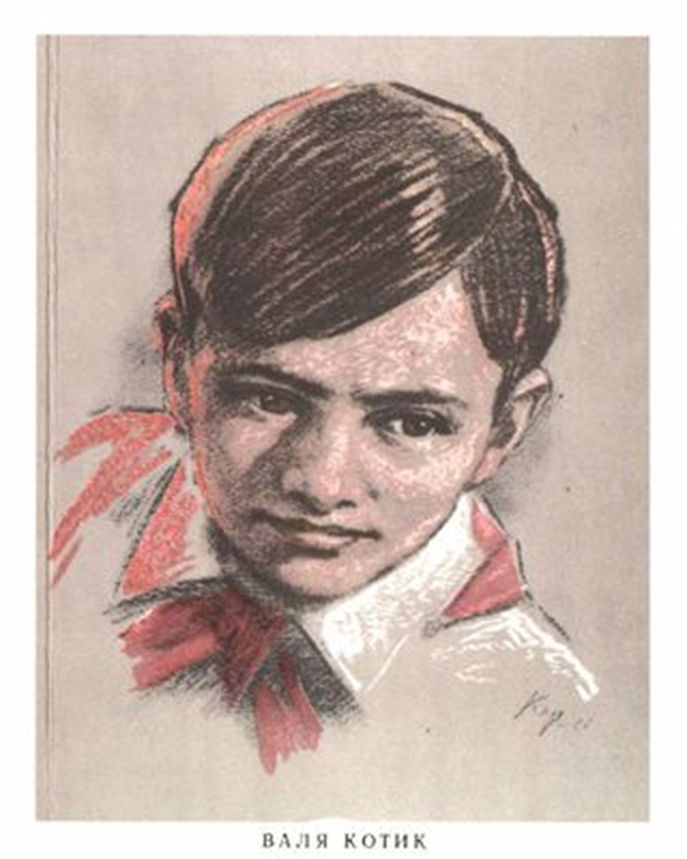 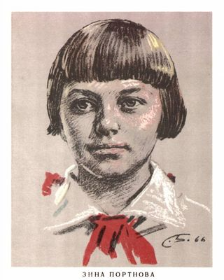
Высшая награда Союза Советских Социалистических Республик — учреждён постановлением Президиума ЦИК СССР от 6 апреля 1930 года.
Орден Ленина являлся высшей наградой СССР за особо выдающиеся заслуги в революционном движении, трудовой деятельности, защите социалистического Отечества, развитии дружбы и сотрудничества между народами, укреплении мира и иные особо выдающиеся заслуги перед Советским государством и обществом.
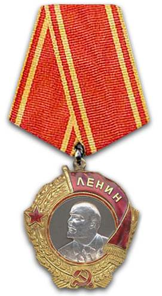Ордена Ленина были удостоены — Толя Шумов, Витя Коробков, Володя Казначеев;
Первый из советских орденов. Был учреждён для награждения за особую храбрость, самоотверженность и мужество, проявленные при защите социалистического Отечества.
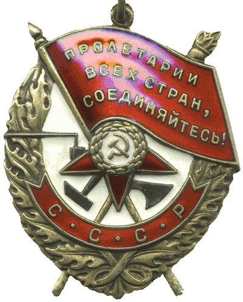Ордена Красного Знамени были удостоены — Володя Дубинин, Юлий Кантемиров, Андрей Макарихин, Кравчук Костя;
Военный орден СССР, учреждённый Указом Президиума Верховного Совета СССР «Об учреждении Ордена Отечественной Войны I и II степени» от 20 мая 1942 года.
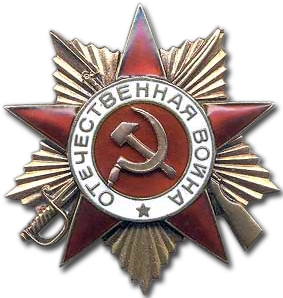Награждались лица рядового и начальствующего состава Красной Армии, Военно-Морского Флота, войск НКВД и партизанских отрядов, проявившие в боях за Советскую Родину храбрость, стойкость и мужество, а также военнослужащие, которые своими действиями способствовали успеху боевых операций наших войск.
Ордена Отечественной войны 1-й степени были удостоены — Петя Клыпа, Валерий Волков, Саша Ковалёв;
Орден Красной Звезды учреждён Постановлением Президиума ЦИК СССР от 6 апреля 1930 года. Статут ордена учреждён Постановлением Президиума ЦИК СССР от 5 мая 1930 года.
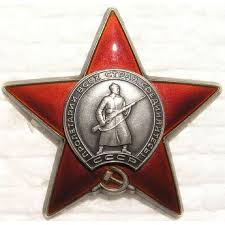Ордена Красной звезды были удостоены — Володя Саморуха, Шура Ефремов, Ваня Андрианов, Витя Коваленко, Лёня Анкинович.
Сотни пионеров были награждены медалью «Партизану Великой Отечественной войны»,
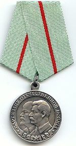 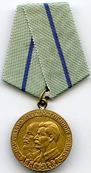I степени
II степени
Медаль «За оборону Ленинграда» — государственная награда СССР, для награждения защитников города Ленинград (военнослужащих и мирных жителей).
Учреждена 22 декабря 1942 года, став одной из первых советских медалей военного времени (одновременно с медалями «За оборону Одессы», «За оборону Севастополя» и «За оборону Сталинграда»).
Свыше 15 000 детей были удостоены медали «За оборону Ленинграда»,
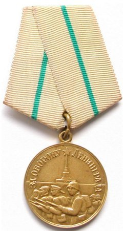Медаль «За оборону Москвы» учреждена Указом Президиума ВС СССР от 1.05.1944 об учреждении медали «За оборону Москвы». Автор рисунка медали — художник Н. И. Москалёв. Свыше 20 000 медалей «За оборону Москвы».
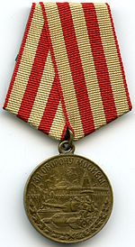